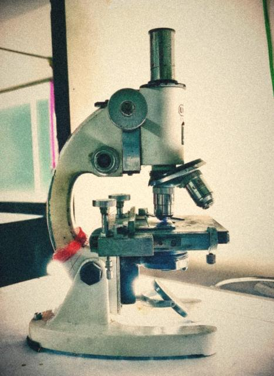
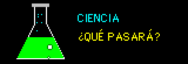
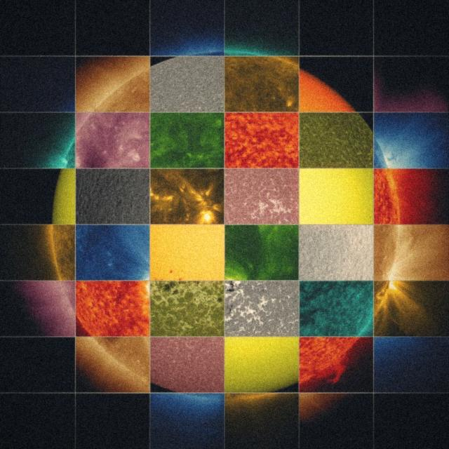
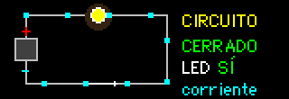
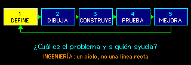
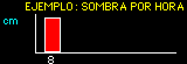

¿Qué quiere decir STEAM?
STEAM reúne Science, Technology, Engineering, Arts and Mathematics, es decir, Ciencia, Tecnología, Ingeniería, Artes y Matemáticas. En CiTIAM adaptamos las siglas al español y las usamos como un mapa: una pregunta puede necesitar más de una materia para encontrar una buena respuesta.
Por ejemplo, para diseñar una sombra en el patio, observamos el movimiento del Sol, elegimos materiales, hacemos un modelo, calculamos medidas y explicamos el diseño con dibujos.
Ci — Ciencia: aprender con pruebas

La ciencia comienza con preguntas sobre cómo funciona el mundo. Una investigación escolar incluye observaciones, una explicación posible, una prueba segura y un registro de lo que ocurrió.
Ejemplo de Hermosillo: ¿cómo cambia la sombra de una planta durante el día? Dibuja su contorno en distintos horarios y compara las observaciones.
Palabras clave: observación, hipótesis, evidencia, comparación y conclusión. Practícalas en el laboratorio virtual.



T — Tecnología: herramientas e ideas

Tecnología no significa solamente computadoras. También puede ser un instrumento, un método o un objeto diseñado para resolver una necesidad. Un sensor ayuda a medir; una página web ayuda a presentar y compartir información.
HTML organiza el contenido de una página, CSS controla su apariencia y JavaScript permite crear acciones. Son lenguajes distintos que colaboran para que funcione un sitio web.
Prueba: localiza un sensor en un aparato cotidiano. ¿Qué mide y qué hace el aparato con esa medición?

I — Ingeniería: diseñar y mejorar
La ingeniería convierte una necesidad en un diseño que se puede construir y probar. Un primer intento no tiene que ser perfecto: los resultados sirven para decidir qué cambiar.
- Define el problema y quién necesita la solución.
- Dibuja varias ideas antes de elegir una.
- Construye un modelo sencillo con materiales seguros.
- Prueba, mide y anota qué funcionó y qué no.
- Mejora el diseño y explica tus decisiones.


A — Artes: imaginar, comunicar y diseñar
Las artes fortalecen STEAM porque ayudan a imaginar posibilidades y a comunicar una idea. Un plano, una ilustración científica, una animación o el diseño de una página pueden hacer que un proyecto sea más claro y útil para otras personas.
Reto: crea un cartel que explique un descubrimiento usando un dibujo, un título claro y un dato observado.

M — Matemáticas: medir y encontrar patrones

Las matemáticas ayudan a describir cantidades, distancias, formas y cambios. Una tabla permite organizar observaciones; una gráfica permite comparar datos de un vistazo.
¿Sabías que el ajedrez es pura matemática? Mira la leyenda del trigo, que explica el crecimiento exponencial.
Si registras la longitud de una sombra cada hora, puedes ordenar las medidas y buscar un patrón. No inventes las mediciones: escribe cuándo y cómo las tomaste.
Pregunta: ¿qué unidades usarías para medir el largo de una sombra: centímetros, litros o grados? Explica por qué.

Un reto, cinco miradas
Pregunta de diseño: ¿cómo hacemos una sombra para un semillero escolar?
- Ciencia: observa cuánto sol recibe cada planta.
- Tecnología: elige herramientas para medir luz y temperatura.
- Ingeniería: construye una estructura estable que dé sombra.
- Artes: diseña un modelo claro, cómodo y agradable.
- Matemáticas: mide alturas, largos y cambios a lo largo del día.